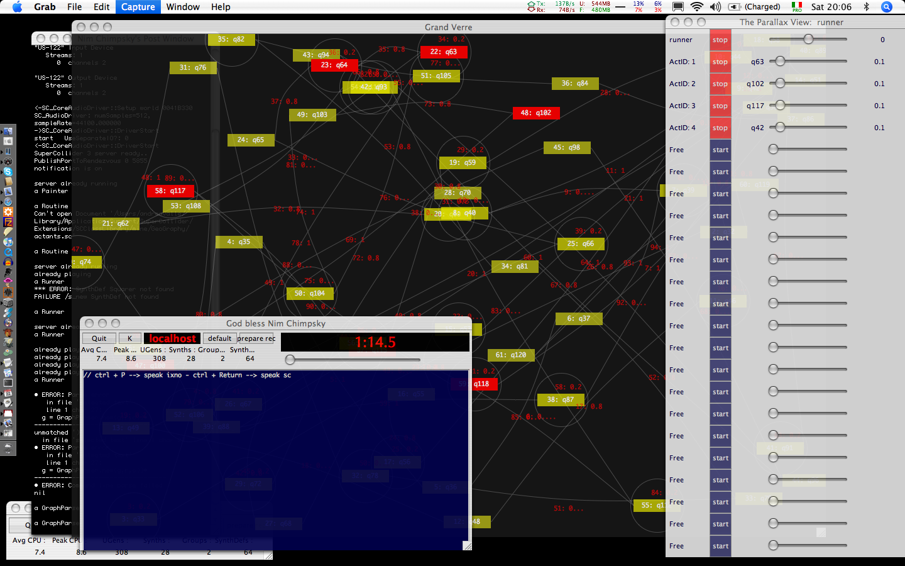

GeoGraphy: Startup
The discussed documents are related to GeoGraphy, a system for algorithmic composition based on graphs, developed by andrea valle (andrea.valle@unito.it).
Some (old) infos are here under:
http://www.cirma.unito.it/andrea/geoGraphy/
Requirements
GeoGraphy has been tested under MacOSX 10.4, with SC 3.1. It uses SwingOSC 0.56.
The core is platform indepedent and GUI pattern is used (but at the moment works properly only with SwingOSC): it is highly unprobable that you can have it working properly with other setups.
So, please start working by evaluating this:
GUI.swing ;
Other issues
Due to event message traffic it can happent that the default scheduler queue size of TempoClock (which is used by GeoGraphy) is not large enough.
In that case SC can complain with a scheduler queue is full message. The solution is to increase the queue size. Open class def (from Lang menu) of TempoClock and in the *new method increase queueSize which is by default 256. I am using queueSize=65536.
Documentation
You can proceed in the documentation following:
1. GeoGraphyIntro
2. GeoGraphyStructure
2. GeoGraphyAudio
4. GeoGraphyGrammar
Then, help files related to classes are obviously available.
Screenshots
The following screenshot shows the Painter (Grand Verre), the GraphParser interface (God bless Nim Cimpsky), the Runner interface (The Parallax View). Post window is resized and its color scheme is customized.

Licence et al.
GeoGraphy is licensed as SuperCollider under GPL. Indeed, use at your own risk.
Bugs and ToDo List